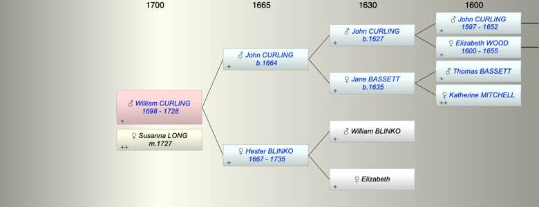

| [Index] |
| William CURLING (1698 - 1728) |
|  |
| b. 1698 at St Laurence |
| m. 04 Jun 1727 Susanna LONG at St Laurence |
| d. 27 Sep 1728 at St Laurence aged 30 |
| Parents: |
| John CURLING (1664 - ) |
| Hester BLINKO (1667 - 1735) |
| Siblings (5): |
| Elizabeth CURLING (1691 - ) |
| John CURLING (1694 - ) |
| Jane CURLING (1696 - 1764) |
| Thomas CURLING (1702 - 1733) |
| Bridger CURLING (1705 - 1746) |
| Events in William CURLING (1698 - 1728)'s life | |||||
| Date | Age | Event | Place | Notes | Src |
| 1698 | William CURLING was born | St Laurence | Note 1 | ||
| 04 Jun 1727 | 29 | Married Susanna LONG | St Laurence | ex FMP PR | |
| 27 Sep 1728 | 30 | William CURLING died | St Laurence | Note 2 | |
| Personal Notes: |
|
What is the link with the Joad family? John Joad married Sus(anna) Curling widow 22 Nov 1729 at St Laurence ex East Kent Marriages had a son John in 1733
So Susanna had been married to a Curling before 1729- this must be William Curling to Susanna Long at St Laurence on 4 Jun 1727. So William died 14 months after his marriage. |
| Created on a Mac™ using iFamily for Mac™ on 8 Oct 2023 |